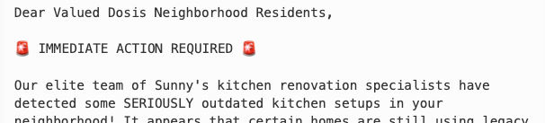
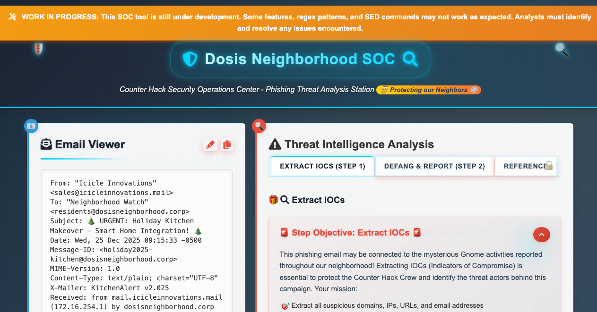
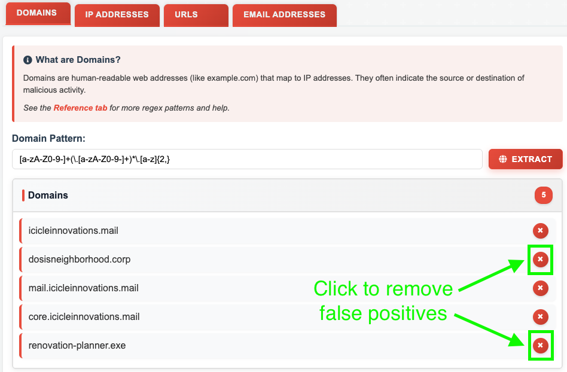
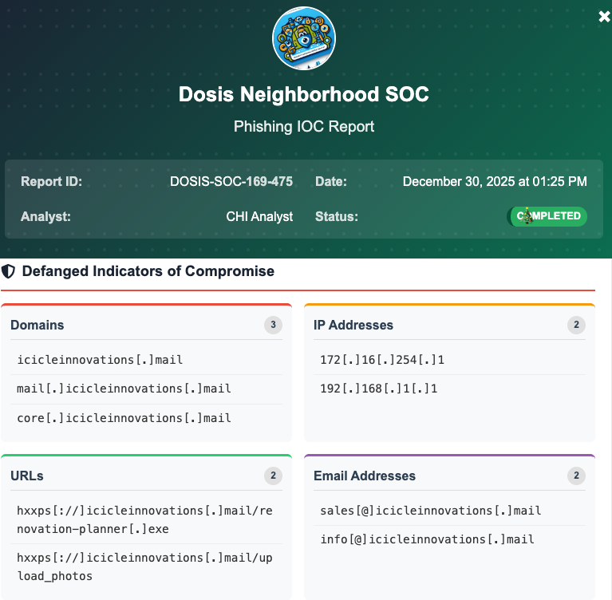
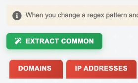
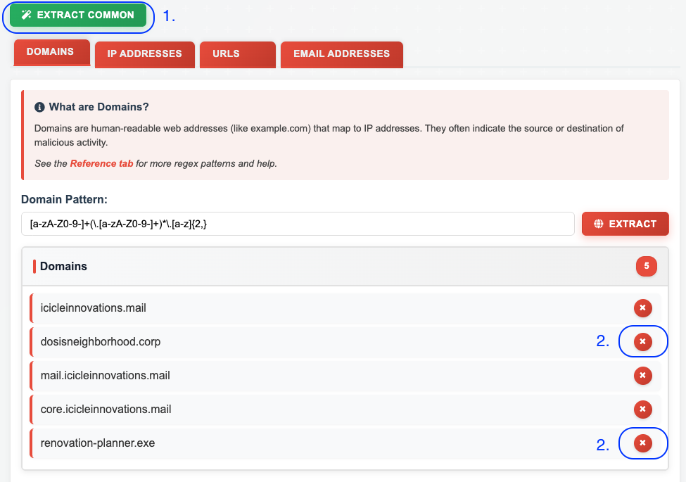
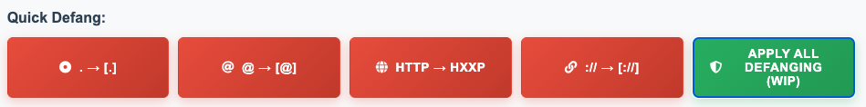

It's All About Defang

A phishing email is targeting the Dosis Neighborhood, and it's up to you to extract and neutralize the threat. But the SOC tools are half-broken, and you'll need to dig into the source code to unlock their full potential.
Challenge Overview
In this challenge, we're a Security Operations Center (SOC) analyst, a cybersecurity professional who monitors, detects, and responds to threats. Our mission: triage a phishing email targeting the Dosis Neighborhood by extracting and defanging its Indicators of Compromise (IOCs) using a web-based SOC tool.

Fixing the Reference Regex Patterns
The Reference tab provides regex patterns for extracting IOCs, but as the "Work in Progress" banner
warns, these have some errors. By examining the JavaScript source code, we can find more
complete patterns defined in the commonPatterns object:
const commonPatterns = {
domains: "[a-zA-Z0-9-]+(\\.[a-zA-Z0-9-]+)+",
ips: "\\b\\d{1,3}\\.\\d{1,3}\\.\\d{1,3}\\.\\d{1,3}\\b",
urls: "https?://[a-zA-Z0-9-]+(\\.[a-zA-Z0-9-]+)+(:[0-9]+)?(/[^\\s]*)?",
emails: "\\b[a-zA-Z0-9._%+-]+@[a-zA-Z0-9.-]+\\.[a-zA-Z]{2,}\\b"
};| IOC Type | Reference Tab Pattern | From main.js, commonPatterns |
|---|---|---|
| Domains | [a-zA-Z0-9-]+(\.[a-zA-Z0-9-]+)+ |
[a-zA-Z0-9-]+(\.[a-zA-Z0-9-]+)+ |
| IPs | \d{1,3}\.\d{1,3}\.\d{1,3} |
\b\d{1,3}\.\d{1,3}\.\d{1,3}\.\d{1,3}\b
|
| URLs | http://[a-zA-Z0-9-]+(\.[a-zA-Z0-9-]+)+(:[0-9]+)?(/[^\s]*)? |
https?//[a-zA-Z0-9-]+(\.[a-zA-Z0-9-]+)+(:[0-9]+)?(/[^\s]*)?
|
| Emails | \b[a-zA-Z0-9._%+-]+@[a-zA-Z0-9.-]+\.[a-zA-Z]{2,}\b |
\b[a-zA-Z0-9._%+-]+@[a-zA-Z0-9.-]+\.[a-zA-Z]{2,}\b |
Here's a breakdown of the differences:
- Domains: no change. However, I created this improved one:
[a-zA-Z0-9-]+(\.[a-zA-Z0-9-]+)*\.[a-z]{2,}. It requires a valid TLD (top-level domain) of at least 2 lowercase letters, which significantly reduces false positives by avoiding matches on strings like version numbers or partial hostnames. - IPs: Missing octet and word boundaries added.
- URLs: added
s?to add matching on https. - Emails: no change.
Removing False Positives
We use the updated patterns and extract IOCs. Then we need to manually remove legitimate assets that belong to the victim organization. These are not malicious indicators. They're the target of the phishing attack, not the source.

Domains to Remove
dosisneighborhood.corp— The victim's internal domainrenovation-planner.exe— Not a domain. This is a filename incorrectly matched because it contains a dot
IPs to Remove
10.0.0.5— The victim's internal mail server
URLs to Remove
None — all extracted URLs point to the attacker's infrastructure
Emails to Remove
residents@dosisneighborhood.corp— The victim's email address (recipient of the phishing email)holiday2025-kitchen@dosisneighborhood.corp— Not a real email; this is the Message-ID header, a unique identifier for the email
Defanging IOCs with SED Commands
Once we've extracted and cleaned our IOCs, we need to "defang" them (neutralizing malicious indicators so they can't be accidentally clicked or executed). The challenge provides quick-defang buttons for individual transformations:
| Button | SED Command | Transformation |
|---|---|---|
| . → [.] | s/\./[.]/g |
Replaces dots with [.] |
| @ → [@] | s/@/[@]/g |
Replaces @ symbols with [@] |
| HTTP → HXXP | s/http/hxxp/g |
Replaces http with hxxp |
| :// → [://] | s/:\/\//[://]/g |
Replaces :// with [://] |
The interface allows chaining multiple SED commands by separating them with semicolons, but it's a lot of copying and pasting. Rather than clicking each button individually, we can apply all defanging rules in a single command:
s/\./[.]/g; s/@/[@]/g; s/http/hxxp/g; s/:\/\//[://]/g
Enter this in the "Custom SED Command(s)" field and click Apply to defang all IOCs at once. Finally, click the "Send to Security Team button" to complete the challenge.

Alternate Solution: Enabling Hidden Features with JavaScript
While the manual approach works, we can streamline the process by enabling the application's hidden functionality. The JavaScript source reveals two useful features that aren't fully implemented in the UI:
- Extract Common — Applies working regex patterns and extracts all IOC types.
- Apply All Defanging — Marked as "WIP" but fully functional in the code
Streamlined Workflow
- Run 1st set of commands in Dev Tools console to use the common patterns and my enhanced one for
domains.
Then click newly added green "EXTRACT COMMON" button.
JavaScript - Command Set 1: Add Extract Common button
commonPatterns.domains = "[a-zA-Z0-9-]+(\\.[a-zA-Z0-9-]+)*\\.[a-z]{2,}"; const extractBtn = document.createElement('button'); extractBtn.id = 'extract-common'; extractBtn.className = 'action-button secondary-button'; extractBtn.innerHTML = '<i class="fas fa-magic"></i> Extract Common'; document.querySelector('.pattern-info-box').after(extractBtn); initialize();
- Manually delete false positives (see list above).

- While in the Defang and Report tab, run the 2nd set of commands in Dev Tools console
to disable the WIP (work in progress) button and
enable the defang all button. Click the "APPLY ALL DEFANGING" button.
JavaScript - Command Set 2: Enable Apply All Defanging button
document.getElementById('defang-standard').classList.remove('wip-button'); document.getElementById('defang-standard').onclick = applyStandardDefanging;
- Click the "Send to Security Team button" to complete the challenge.
Challenge Reference Material
Challenge Descriptions
Classic Mode Description
Find Ed Skoudis upstairs in City Hall and help him troubleshoot a clever phishing tool in his cozy office.
CTF Mode Description
Oh gosh, I could talk for hours about this stuff but I really need your help! The team has been working on this new SOC tool that helps triage phishing emails...and there are some...issues. We have had some pretty sketchy emails coming through and we need to make sure we block ALL of the indicators of compromise. Can you help me? No pressure...
Official Hints
- Remember, the new Phishing Threat Analysis Station (PTAS) is still under construction. Even though the regex patterns are provided, they haven't been fine tuned. Some of the matches may need to be manually removed.
- The PTAS does a pretty good job at defanging, however, the feature we are still working on
is
one that defangs ALL scenarios. For now, you will need to write a custom
sedcommand combining all defang options.